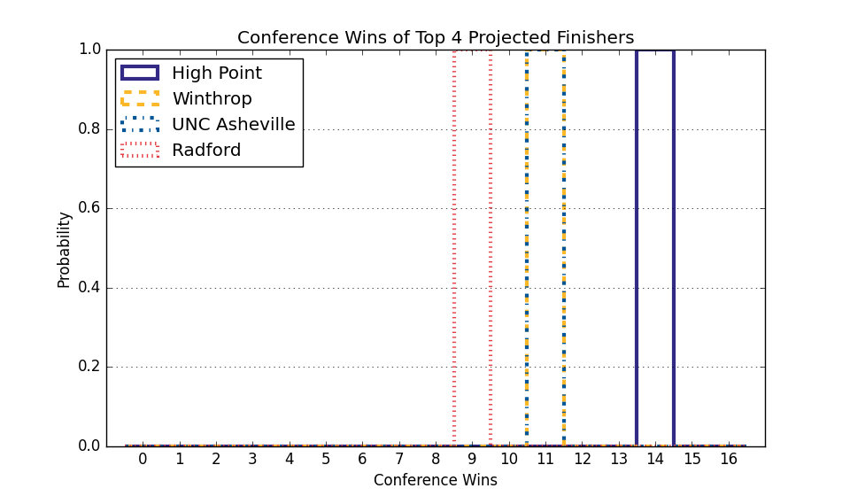

This Week's Games
| Date | Away | W Prob, Pred Score | Home | |||
|---|---|---|---|---|---|---|
| Nov. 19 | UNC Asheville | 44.7% | 75 | 76 | 55.3% | Western Carolina |
| Nov. 19 | Tennessee Tech | 32.5% | 71 | 77 | 67.5% | USC Upstate |
| Nov. 20 | Illinois Chicago | 38.6% | 75 | 78 | 61.4% | High Point |
| Nov. 21 | Charleston Southern | 24.3% | 71 | 79 | 75.7% | East Carolina |
| Nov. 21 | UNC Wilmington | 62.4% | 74 | 70 | 37.6% | Radford |
| Nov. 21 | Presbyterian | 2.2% | 52 | 76 | 97.8% | UCLA |
| Nov. 21 | USC Upstate | 35.0% | 74 | 79 | 65.0% | West Georgia |
| Nov. 22 | Gardner Webb | 10.4% | 67 | 82 | 89.6% | Richmond |
| Nov. 23 | Longwood | 35.8% | 75 | 80 | 64.2% | Columbia |
| Nov. 23 | Winthrop | 70.6% | 85 | 78 | 29.4% | Jackson St. |
| Nov. 24 | Radford | 2.9% | 66 | 91 | 97.1% | SMU |
| Nov. 25 | Winthrop | 7.7% | 74 | 92 | 92.3% | Nebraska |
| Nov. 25 | Tennessee St. | 23.6% | 73 | 81 | 76.4% | UNC Asheville |
| Nov. 25 | North Carolina Central | 14.0% | 71 | 84 | 86.0% | USC Upstate |